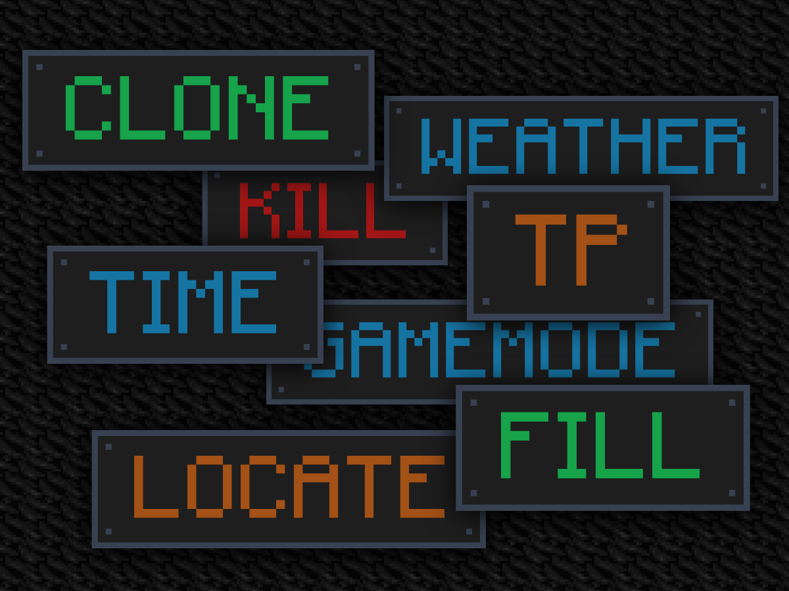
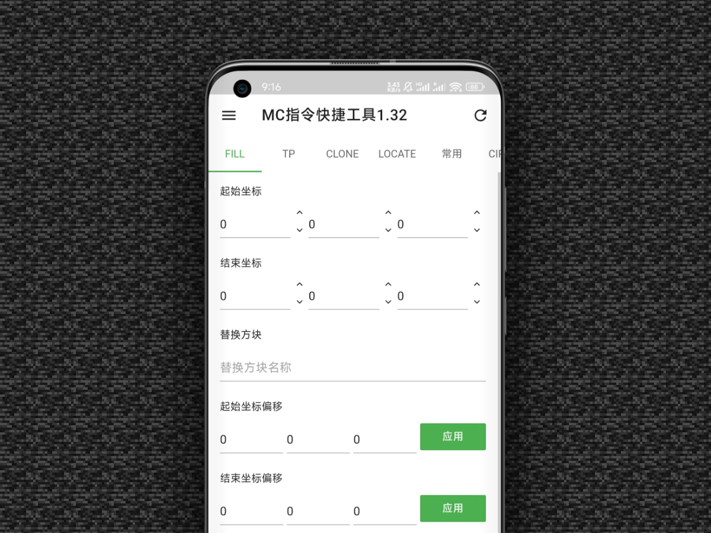
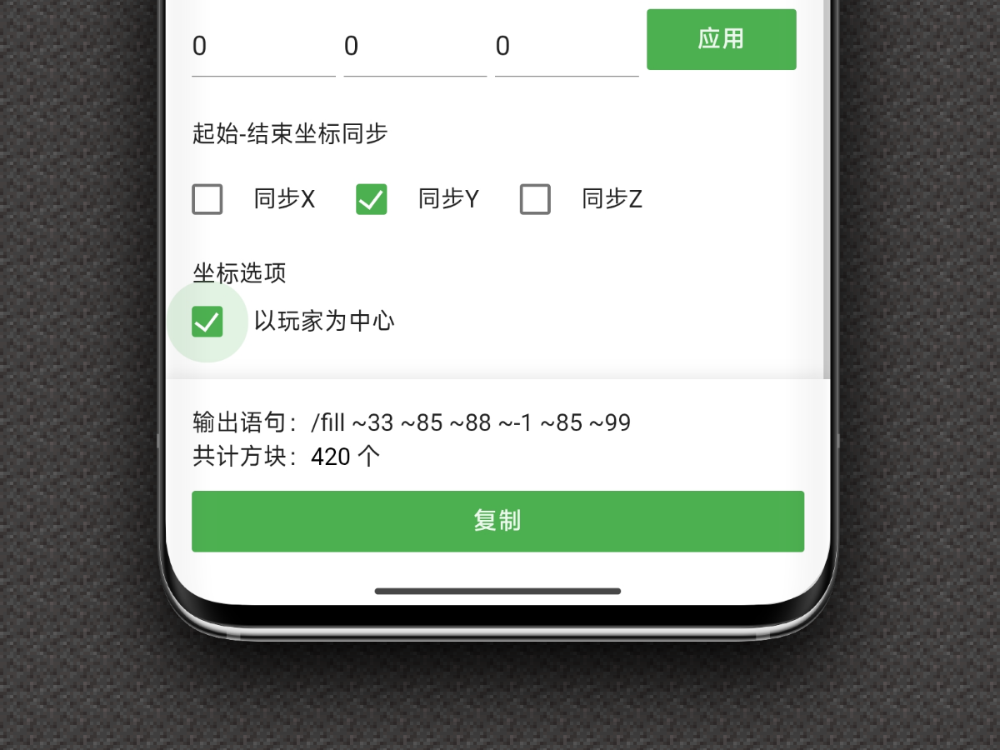
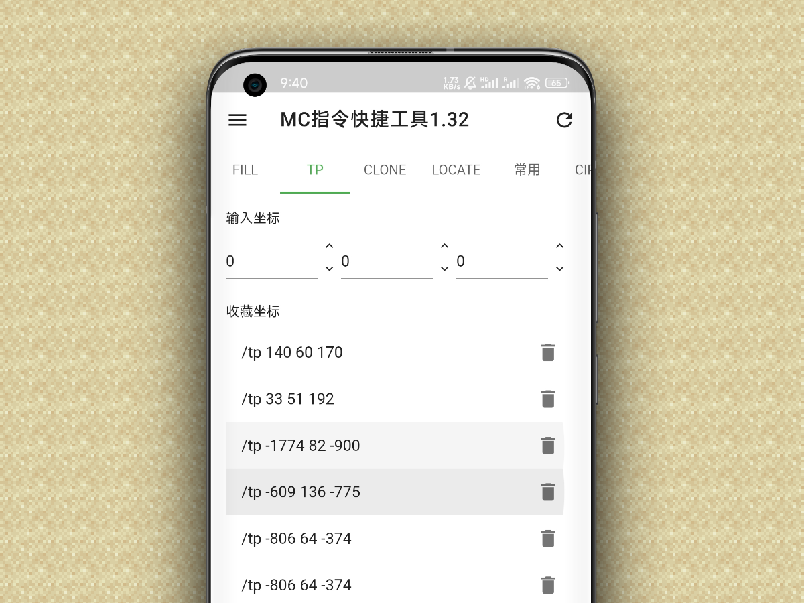
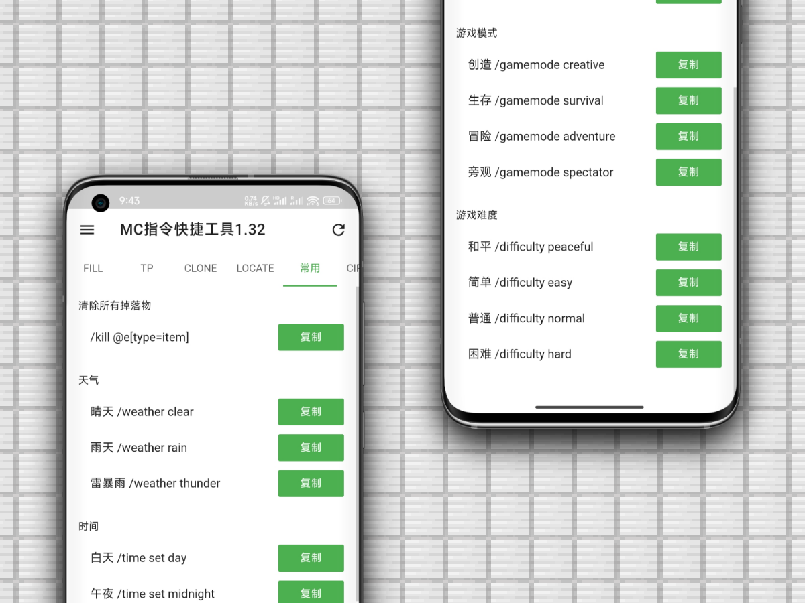
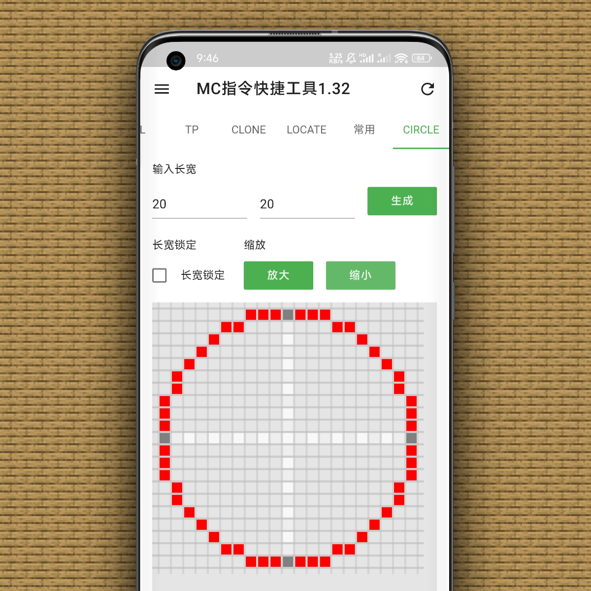

为Minecraft玩家而生的指令生成器
让复杂指令一键完成
无需记忆语法，不再手敲坐标，专注创造本身。
EFFICIENCY
高效生成 Minecraft 常用指令
- 覆盖 Fill / TP / Clone / Locate 等高频场景
- 所有指令 实时预览，一键复制，即用即走
- 避免手动输入出错，大幅提升操作效率


COORDINATES
可视化坐标编辑，告别心算
- 起始 / 结束坐标 独立调节面板
- 支持 坐标偏移、一键应用
- X / Y / Z 轴可单独开启 起止同步
- 支持 以玩家为中心（~ 坐标）
特别适合大型建筑、批量填充、地图制作
CALCULATOR
Fill 指令智能计算
不用再担心填充范围过大导致游戏崩溃。
- 自动计算 填充区域方块总数
- 实时更新，避免误填、炸图
- 精确控制范围，适合红石、建筑党、地图作者


FAVORITES
TP 坐标收藏系统
- 常用坐标 一键收藏
- 点击即复制，随时传送
- 本地保存，无需登录、无需联网
LIBRARY
内置常用指令库
清除掉落物
天气控制
时间切换
模式 & 难度
“新手不查 Wiki，老玩家不浪费时间。”


ADVANCED
圆形 / 结构辅助工具
进阶玩法，为创作型玩家准备的效率工具。
- 圆形生成器，支持尺寸、比例锁定、缩放
- 辅助生成复杂结构指令
重视隐私，纯本地运行
- • 不收集账号信息
- • 收藏与配置全部 本地存储
- • 无需登录，不上传游戏数据
专为安卓设备优化
- • 适配手机和平板
- • 低版本 Android 也可运行
- • 操作简单，单手即可完成
WHO IS THIS FOR?
建筑党
快速 Fill
大体量结构
红石玩家
精确控制区域
与复制
地图作者
Locate / Clone
批量编辑
生存 & 创造
日常指令
随用随走
学习者
边用边学
不再死记语法